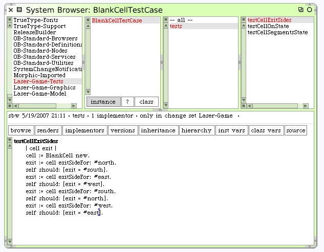
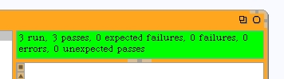
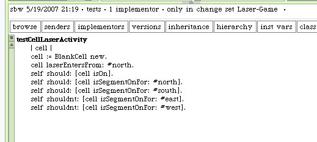

Here's the new test method for our Blank Cell unit test.
When we use the test runner to run our unit tests we get another passing test.
Another behavior we need, is to tell the cell that the laser beam has entered the cell. We will need to specify which side the laser beam entered by. Our new test could check if the expected line segments in the cell are lit-up when the method completes. Just add the test while we are here in the test case class. We already know the new method #laserEntersFrom: does not exist yet.
